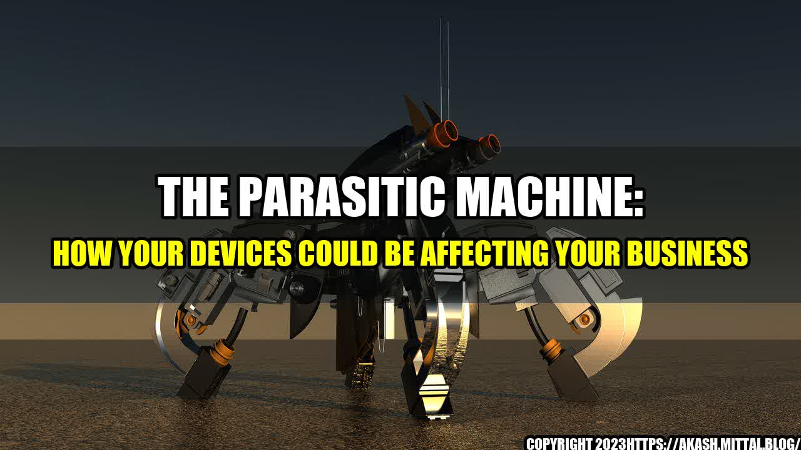

The Parasitic Machine: How Your Devices Could Be Affecting Your Business

It all started when John, a business owner, noticed something strange. His electricity bill was skyrocketing, and he couldn't figure out why. He called his energy provider, who suggested he look into the power consumption of his devices. What he discovered was eye-opening. Many of his devices were running constantly, even when not in use, and were consuming more power than necessary. This was the start of John's journey to discovering the parasitic machine.
What is the Parasitic Machine?
The parasitic machine is a term used to describe devices that consume unnecessary energy and resources. This can include everything from computers and smartphones to IoT devices and even coffee makers. These devices may be idle or in standby mode, but they are still drawing power. Over time, this can add up, resulting in increased energy costs and a significant impact on the environment.
The Impact on Business Efficiency
The parasitic machine can have a significant impact on business efficiency. When devices are left running needlessly, they not only consume more energy but also reduce the lifespan of the devices. This can result in more frequent replacements, increased maintenance costs, and decreased productivity for employees. In addition, the constant use of these devices can lead to technical issues and security vulnerabilities, which can further affect business operations.
Quantifiable Examples
- In 2013, Google found that their data centers were consuming enough electricity to power 200,000 homes. They implemented measures to reduce their energy consumption, resulting in a 50% decrease in power usage.
- A 2019 study by the National Resources Defense Council found that office equipment alone accounted for 7% of total commercial electricity use in the US, costing businesses $1.8 billion annually.
- A study by Lawrence Berkeley National Laboratory found that office plug loads (including computers, printers, and other devices) were responsible for up to 30% of total electricity consumption in commercial buildings.
The Solution: Energy Conservation and Sustainable Development
The key to combating the parasitic machine is energy conservation. By implementing energy-efficient practices and technologies, businesses can reduce their energy costs and decrease their impact on the environment. This includes:
- Using power-saving settings on devices when not in use, including computers, monitors, and printers.
- Turning off devices when not in use, particularly overnight and on weekends.
- Using energy-efficient devices, such as LED lights and Energy Star certified products.
- Implementing smart technologies, such as motion sensors and power strips, to control energy use.
By implementing these practices, businesses can not only reduce their energy consumption but also increase their sustainable development efforts.
Practical Tips
- Conduct an energy audit of your business to identify areas where energy savings can be made.
- Invest in smart technologies that can help control energy use, such as motion sensors and power strips.
- Encourage employees to turn off devices when not in use and use power-saving settings on devices.
- Consider investing in renewable energy sources, such as solar panels, to further reduce your energy consumption.
Conclusion
In conclusion, the parasitic machine is a real issue that affects businesses of all sizes. By implementing energy-efficient practices and technologies, businesses can reduce their energy consumption, decrease their impact on the environment, and increase their business efficiency. It's up to all of us to take action to combat the parasitic machine.
Three Key Takeaways
- The parasitic machine is a term used to describe devices that consume unnecessary energy and resources.
- The parasitic machine can have a significant impact on business efficiency and increase energy costs.
- The key to combating the parasitic machine is energy conservation and sustainable development.
References and Hashtags
- Google Energy Efficiency Calculator: https://www.google.com/green/energy/efficiency/#/calculator
- National Resources Defense Council: https://www.nrdc.org/resources/power-savings-leveraging-energy-efficiency-office
- Lawrence Berkeley National Laboratory: https://eta.lbl.gov/publications/office-plug-load-energy-use
- Hashtags: #ParasiticMachine #EnergyEfficiency #SustainableDevelopment #IoT #SmartDevices
Curated by Team Akash.Mittal.Blog
Share on Twitter Share on LinkedIn